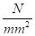
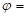
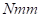
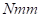
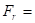
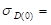
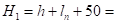

Прорачун ручне дизалице
У навојном вретену је присутно сложено напонско стање које се састоји од: површинског притиска и напона увијања
Напон притиска потиче од терета којие се подиже, а напон увијања од ручне силе којом радници делују на ручицу и оба напона су непознате величине. Како је напон притиска у овом случају доминатан ми ћемо претпоставити сложен напон у облику:
.............. (1)
Прорачун (завршни) ће показати да ли смо били у праву!
Усвајамо коефицијент квалитета израде навоја за грубу обраду: 0.7 (Књига: машински елементи 1 - М.Е.I)
За материјал навојног вретена (задан по поставци задатка): Č.0460 из Т 2.3. (М.Е.I) усвајамо напон течења материјала:
240 

Из књиге М.Е.I прочитати лекцију основе прорачуна машинских елемената!
Дозвољени напон рачунамо по обрасцу: 80
Напон притиска се рачуна по обрасцу:
површина попречног пресјека језгра навојног вретена, зашто се узима у обзир при прорачуну?
Из једначине (1) следи:
446.4286 
За покретне навојне спојеве користе се: трапезни и коси навој, приказани на слици испод:
Карактеристичне величине трапезног и косог навоја су приказане у табелама Т 4.3 и Т 4.4 испод:


По услову задатка задан је трапезни навој, па из Т 4.3 М.Е.I усвајамо навој са првом већом површином попречног пресека језгра навоја:

 511 којој одговара трапезни навој: JUS M.B0.062
511 којој одговара трапезни навој: JUS M.B0.062
 32
32 
 25.5
25.5
 29
29
2.5 Теоријска дубина ношења навојног споја М.Е.I
 3.78 ° тј. 0.065973 rad (због рада у Еxcelu)
 30 ° тј. 0.523599 rad (због рада у Еxcelu)
30 ° тј. 0.523599 rad (због рада у Еxcelu)
Провера степена сигурности навојног вретена на сложен напон
Момент увијања у навојном вретену (М.Е.I - покретни навојни спојеви) износи:
 53488.88 
53488.88 
 Момент увијања потребан за покретање навојног вретена, да савлада трење у навојном споју!
Момент увијања потребан за покретање навојног вретена, да савлада трење у навојном споју!
 Момент увијања потребан да савлада момент трења на додиру аксијалног рукавца и лежишта!
Момент увијања потребан да савлада момент трења на додиру аксијалног рукавца и лежишта!
 0.051764
0.051764  0.051718 rad 2.963203 °
0.051718 rad 2.963203 °
Напомена:
трапезни навој је симетричан, па се у последњем изразу користи . Коси навој је несимтеричан, па се користи:  , конкретно:
, конкретно:  уместо: у последњем изразу.
уместо: у последњем изразу.
19.2
 0.05 (покретни навојни спојеви М.Е.I)
0.05 (покретни навојни спојеви М.Е.I)
Напон притиска:
 39.13894
39.13894
Напон увијања:
 16.42907
16.42907
Поларни отпорни момент инерције пов. поп. пресека језгра навојног вретена се рачуна по обрасцу:
 3255.745
3255.745
Сложен напон:
 43.82389
43.82389
Коефицијент свођења тангентног на нормалан напон:
 1.2 (може се усвојити)
1.2 (може се усвојити)
Степен сигурности навојног вретена:
 5.476465 задовољава јер је минималан степен сигурности: 3
5.476465 задовољава јер је минималан степен сигурности: 3
Провера степена сигурности на извијање
Виткост навојног вретена: 62.7451

О којем од 4 случаја извијања навојног вретена је овде реч??? (отпорност материјала)
Ако је израчуната виткост:
 мања од граничне виткости
мања од граничне виткости  ( < ), критичан напон за случај извијања се рачуна по Тет Мајеровој једначини (зависно од материјала):
( < ), критичан напон за случај извијања се рачуна по Тет Мајеровој једначини (зависно од материјала):
- Меки челици:
-
Полутврди челици:

- Тврди, врло тврди и легирани челици:
Ако је израчуната виткост:
већа од граничне виткости ( > ), критичан напон за случај извијања се рачуна по Ојлеровој једначини: 
У нашем случају за Č.0460 105, а израчуната виткост  62.7451
62.7451
< па се критичан напон рачуна по Тет Мајеровој једначини: 238.471
Степен сигурности на извијање: 6.092924 задовољава јер је минималан степен сигурности за случај извијања: 4
Провера површинског притиска у навојном споју
Површински притисак у навојном споју (М.Е.I - покретни навојни спојеви) износи:
13.17144
Корак навоја:  6
6
Висина навртке: 40 (гледати да се добије цели број)
По поставци задатка ради се о навртци од бронзе за коју је дозвољени површински притисак:  . Усвајам дозвољени површински притисак
. Усвајам дозвољени површински притисак  15
15
Површински притисак задовољава јер је: 
Напомена: У случају да нам било који израчунати степен сигурности или површински притисак нису у предвиђеним тј. дозвољеним границама морали бисмо усвојити следећи већи пречник навоја, поново израчунати Т, проверити све остале степене сигурности и површински притисак, тако постепено повећавати - усвајати следећи већи пречник навоја рачунати степене сиг. и пов. притисак све док ст. сигурности и површински притисак не буду у предвиђеним границама!
Усвојени навој који задовољи све степене сигурности и површински притисак је меродаван за даљи прорачун и конструкцију ручне дизалице!
По поставци задатка ручном дизалицом рукују два радника, па је коефицијент неравномерности оптерећења:  0.8, као што је и задано!
0.8, као што је и задано!
У случају да је један радник онда је: 1
Два радника остварују момент увијања:
53488.88 ручном силом која је по поставци задатка:  150 
Крак силе:
 222.8703
222.8703
Узимајући у обзир дужину навоја за кугле: ≈ 100 , као и део ручице који се налази у глави ручне дизалице, укупна дужина ручице износи:
380.4703
Усвајам дужину:
400
Ручица је оптерећена на савијање:
.............. (2)
Момент савијања:
 33430.55
33430.55
Дозвољени напон:
 100
100
Трајна динамичка чврстоћа на једносмерно промењиво оптерећење се усваја за материјал ручице: Č.0460 из T 2.3 M.E.I:
 300
Зашто је ручица оптерећена на савијање, динамички са једносмерном променом напона?
Т 2.5 М.Е.I
степен сигурности:  3 (зашто?)
3 (зашто?)
У једначини (2) се користи: аксијални отпорни момент површине попречног пресека (отпорност материјала) који се рачуна по обрасцу:
 .............. (3)
.............. (3)
Уврштавајући једначину (3) у једначину (2) добијамо израз за пречник ручице:
15.04462

Из Т 0.1 М.Е.I
усваја се "први" већи стандардни пречник ручице:  16
16
Из књиге M.E.II прочитати лекцију: Избор и провера лежаја!
Пречник навојног вретена: усвојен и проверен у завршном прорачуну је:
32
Пречник рукавца где се поставља лежај рачунамо по обрасцу:
19.2
Усваја се стандардни проврт лежаја (подсети се како се означава лежај):
20
Усваја се колутни лежај типа 511, 512, 513, 514... зашто???
Усваја се колутни лежај 51204 чија је статичка носивост:
31 
Зашто не динамичка носивост лежаја???
Еквивалентно оптерећење:
20000
Из T 2.1 M.E.II за лежај типа 512 усвајамо коефицијенте:
0 и 1
Аксијална сила која оптерећује лежај једнака је тежини терета који се подиже:
20000
Провера лежаја: 1.55 лежај задовољава, зашто???
Напомена: на посебном листу израчунати конструкционе величине ручне дизалице према приложеним обрасцима.
Карактеристичне величине - димензије ручне дизалице:
После прорачуна измоделирати ручну дизалицу, урадити цртеже саставних делова (осим стандардних), урадити склопни цртеж (са стандардним деловима)!
Све оштре ивице оборити, оштре прелазе заоблити према стандардима! Уз пројектни задатак - графички рад предају се поставка задатка, прилажу се све таблице коришћене током израде графичког рада!
Из књиге Конструисање преписати технички опис, начин монтаже, демонтаже, одржавања и руковања ручном дизалицом! На склопном цртежу усвајати класе обрађености површине, толеранцијска поља као што су усвојене на склопном цртежу у књизи!
Све остале стандардне елементе усвајати, ако није дефинисано другачије, тако да конструкција естетски лепо изгледа!
Претпоставља се да се ручна дизалица приликом употребе налази на дрвеној подлози, па се приликом израчунавања пречника трупа дизалице усваја дозвољени површински притисак:
4
Препоручује се да се направи мали увод у прорачун који би обухватао кратак осврт на примену покретних навојних спојева, задану врсту навоја,итд!
Конструкционе величине ручне дизалице
Висина трупа дизалице:
 240
Тангенс угла нагиба трупа дизалице: 0.1
Висина навртке:
 40
40
Висина венца навртке:
10
Дебљина стенке (зида) трупа ручне дизалице:
10
Дебљина стопе трупа ручне дизалице:
15
Конструктивна висина трупа ручне дизалице:
210
За навртку од бронзе, усвојено: 15
Пречници трупа дизалице:
 52.16946 усвајам: 56
52.16946 усвајам: 56
64
полупречник заобљења: 4
106
132.6733 усвајам: 160
81
Пречник венца навртке:
69.52448 усвајам: 71
Висина главе навојног вретена:
 48
48
Пречник проврта лежаја:
20
Пречник отвора за лежај:
26.8013
усвајам из Т 2.7 M.E.II (конструктивна мера): 52
Напомена:
у Т 2.7 немамо мере за проврт 20 , па ћемо у овом случају усвојити спољашње мере колутног лежаја за проврт 25 , а проврт ћемо оставити на 20 !
Пречник главе навојног вретена:
62
Напомена:
у табелама Стројарског приручника - Бојан Краут имамо мере за проврт 20 (и мање), тако да се све може пронаћи ако имамо мало добре воље, свако добро 🧐 позз!
Висина главе ручне дизалице:
48
Пречник главе ручне дизалице:
83.2 усвајам: 85